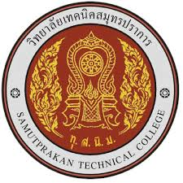

วิทยาลัยเทคนิคสมุทรปราการ
วิทยาลัยเทคนิคกาญจนาภิเษก สมุทรปราการ(อังกฤษ: Kanchanapisek Samutprakan Technical College)
เป็นหนึ่งใน 7 วิทยาลัยเฉลิมพระเกียรติพระบาทสมเด็จพระเจ้าอยู่หัวภูมิพลอดุลยเดชมหาราช เนื่องในวโรกาส งานฉลองสิริราชสมบัติ ครบ 50 ปี
ในวันที่ 9 มิถุนายน พ.ศ. 2539 จัดตั้งโดยสำนักงานคณะกรรมการการอาชีวศึกษา กระทรวงศึกษาธิการ
home
เว็บไซย์วิทยาลัย